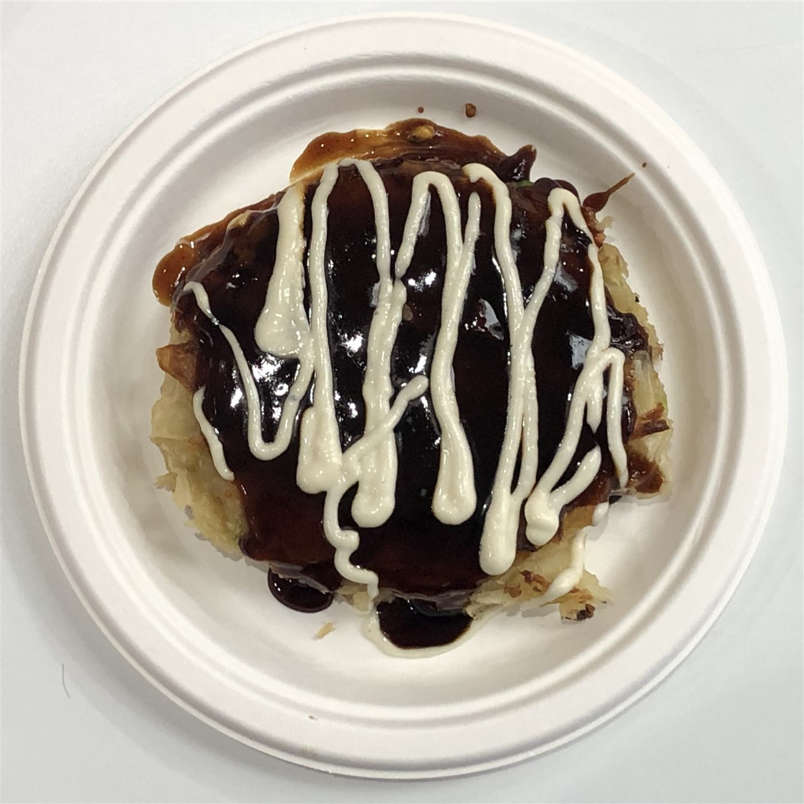

女将さんがひとり、丁寧に焼く。
取手の隠れ家お好み焼き
畳の座敷でほっとひと息。広島風お好み焼きともんじゃ焼きの店
戸頭の路地裏、未舗装の駐車場に車を停めて暖簾をくぐると、畳張りの座敷とこぢんまりしたテーブル席。出迎えてくれるのは、この店を一人で切り盛りする女将さんです。焼きに自信がない方には、鉄板の前で女将さんが手際よく焼き上げてくれます。長年このあたりにお住まいの方でも「こんな店があったとは知らなかった」と驚かれる、取手の隠れ家です。
KOKEKOKKO'S STYLE
こけこっこの3つの強み
女将さんが目の前で、一枚ずつ丁寧に
焼きに自信がない方には、女将さんが鉄板の前で焼き上げてくれます。おまかせも大歓迎。
広島風お好み焼き×もんじゃ焼きの二枚看板
野菜と焼きそば、ベーコンを中心にしたこけこっこ流の広島風と、素材の味を活かしたもんじゃ焼き。お好みでウスターやお醤油を効かせて、自分好みの一枚に仕上げられます。
畳敷きの隠れ家、隣には無料駐車場
畳張りの座敷とこぢんまりしたテーブル席。レトロな店構えの脇には未舗装の駐車場(隣接する酒屋さんも女将さんが営む同一経営)があり、車でも訪れやすいお店です。
OUR STORY
お店のこだわり
鉄板の前に立つのは、いつも女将さんただ一人。気さくで親切な人柄と、実年齢を感じさせない若々しさで、初めての方も常連さんも自然と笑顔になる――そんなお店です。隠し味はカラシ入りのマヨネーズ「カラマヨ」と、ピリッと効いたお好みソース。辛味が気になる方・お子様連れの方は、ご注文の際にお気軽にお申し付けください。
VOICE
お客様の声
★★★★★
初めてご来店のお客様
豚天は具だくさんで外はカリッと中はふんわり。ミックスこけこっこは海鮮の出汁がしっかり効いていて、めんたい餅チーズのもんじゃ焼きも美味しかったとのお声をいただきました。
★★★★★
地元にお住まいのお客様
長年取手市に住んでいても知らなかった穴場だった、というお声。畳張りの長椅子に腰掛けると、こぢんまりした店内との相乗効果でとても落ち着く、無料駐車場も助かる、とのことです。
★★★★☆
お一人でご来店のお客様
レトロな店構えに少し緊張したものの、注文してからは女将さんにおまかせでき嬉しかったとのお声。広島風お好み焼きはまた来たくなる味だそうです。
ACCESS
アクセス概要
| 住所 | 〒302-0034 茨城県取手市戸頭6丁目13-10 |
|---|---|
| 電話 | 0297-78-1427(タップで発信) |
| 駐車場 | 店脇に未舗装の無料駐車場がございます(隣接する酒屋さんの脇です) |
| 営業時間 定休日 | 営業時間・定休日は店舗までお問い合わせください |